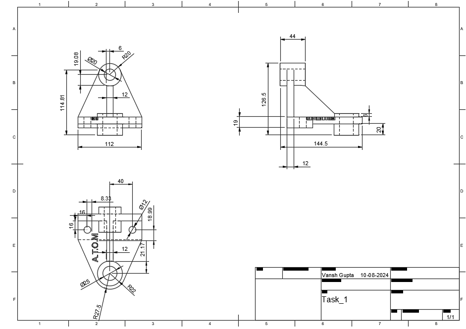
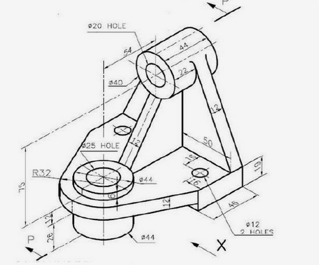
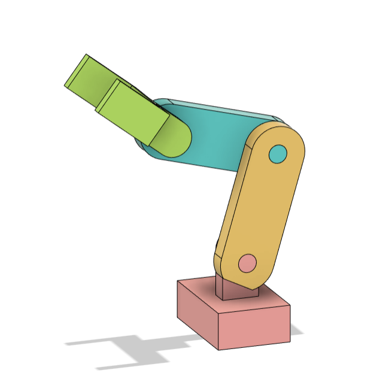

5.1.3. CAD Selection Task: Standard Instructions
The TASK provided here is the selection criteria for joining the A.T.O.M society. Those who sucessfully finish the task within the given time frame will be eligible to give an interview and eventually become a member of the A.T.O.M society.
The tasks are not only to test your problem solving skills but also to see your diligence to learn new stuff the ablity to get the work done.
You will be required to finish Two tasks in the alloted time frame. Both of them are supposed to be done in any 3d modeling software preferably Fusion360.
If there are any 3D Designs or any other previous works (even 2d sketches are fine) related to the stuff you have worked on, you are welcome to share those as well with your submissions. It is optional, but this would help us further see your creativity and skills.
5.1.3.1. Hints / Reference
5.1.3.2. Task 1 : 5pts
5.1.3.2.1. Problem statement
The objective of the task is to make a 3D model of a part using the given engineering drawing.
To achieve this task you may use any method but the end result should be as close as possible to the original drawing.
You will be judged on the basis of your way of designing, so keep that in mind and make sure to follow proper practices(Like using constraints appropriately).
Note
You may use any software that you are familiar with but you are recommended to use Fusion360.
5.1.3.2.2. Expected Output


5.1.3.3. Task 2: 5pts
5.1.3.3.1. Problem statement
The objective of the task is to create or draw an eg/cad drawing for the following displayed below.
To acheive this task you are supposed to create a project in autocad and and make the desired output.
5.1.3.3.2. Description
The 3-DOF arm with simple joints is a versatile mechanical system featuring three degrees of freedom, allowing for a wide range of motion. This design focuses on fundamental movement capabilities, simplifying control and design while offering flexibility for various introductory robotic applications.
You will be judged on the basis of the following criteria:
The judging criteria for CAD selection tasks will include an evaluation of the design history of CAD during the interview.
The judging criteria for CAD selection tasks will include an evaluation of the design history of CAD during the interview.
Manufacturability of the links and mounts (Preferebly 3d Printable)
Adhering to the giving details and guidelines.
Reusability and esay to modify in future if required.
You may use any methods and tools to achieve the task buy make sure to follow proper 3d modeling practices like constraints, joints etc.
Warning
The Deadline for completing the task: 15th October, 2024
5.1.3.3.3. Expected Output

Caution
THE DRAWING SHOULD BE DONE ACCURATELY AND AS EXPECTED .
Head over to Submissions to submit your work